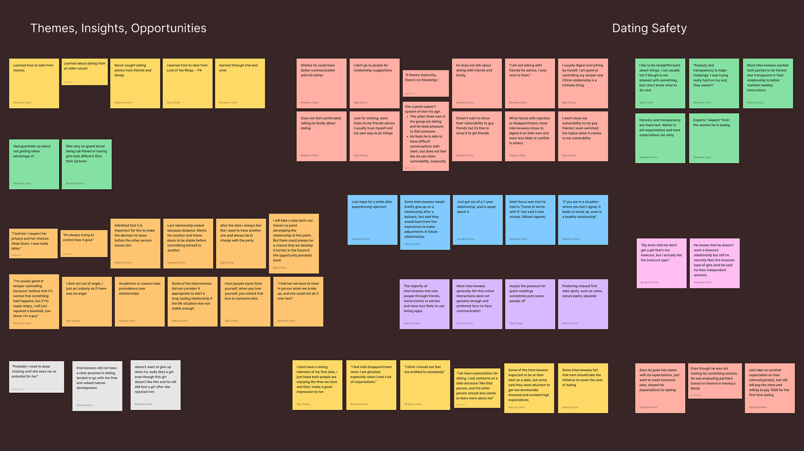
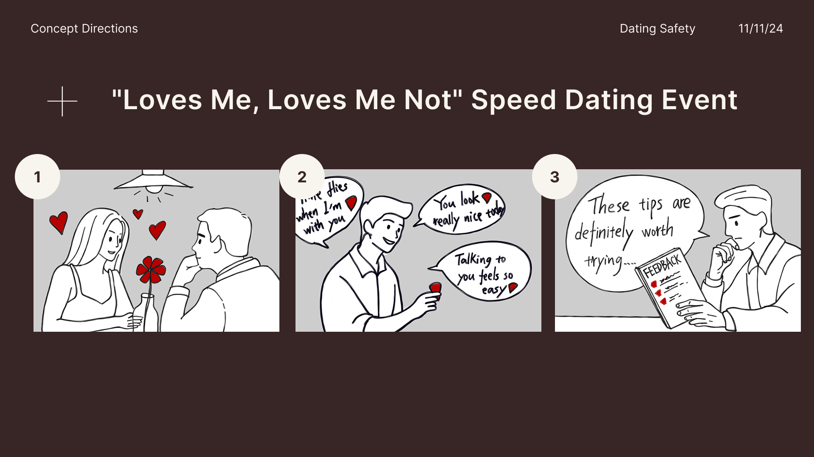
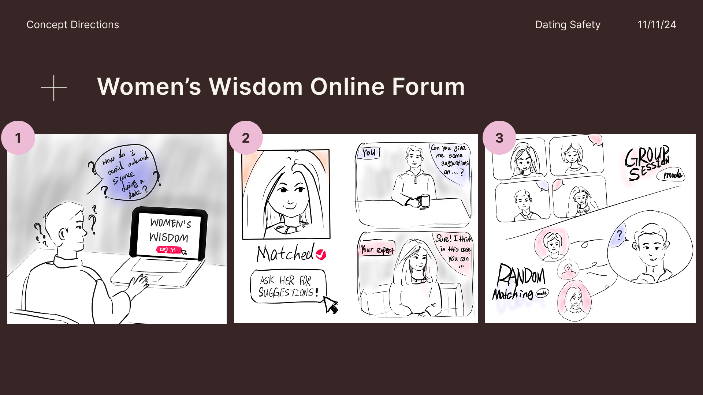
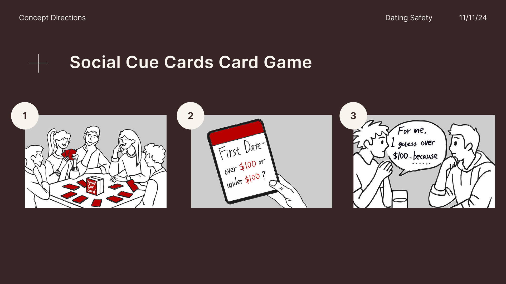
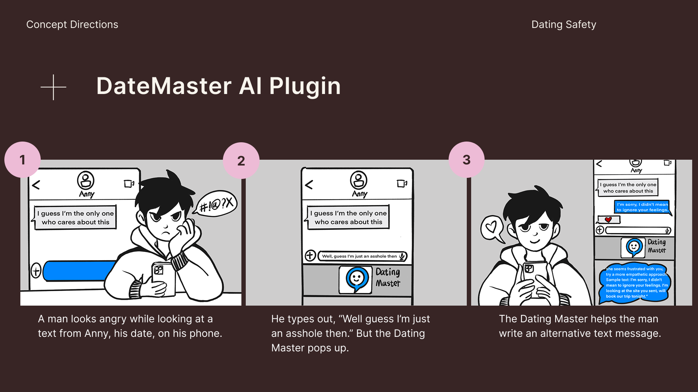
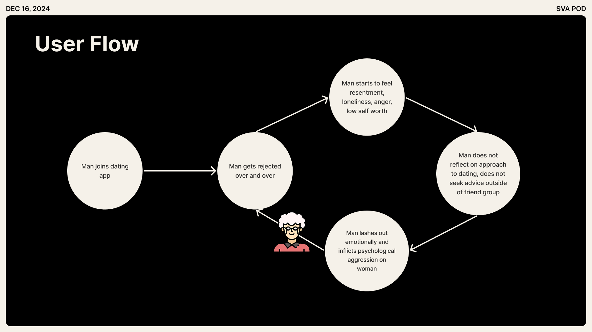

The Process
Our design process focused on synthesizing our research findings into actionable design categories that addressed the critical elements we'd identified: challenging unhealthy control patterns, educating about appropriate courtship behavior, and offering support systems for men.
Research & Insights
Our research methodology combined interviews, surveys, and usability testing to build a comprehensive understanding of the dating app experience.
We began by conducting interviews with men about their experiences in dating and using online dating platforms. Through these conversations, we discovered that men often lack solid support systems for navigating dating and relationships. This emotional isolation, combined with limited resources for learning healthy dating behaviors, creates a perfect storm.

Exploration & Ideation
Armed with these insights, we began exploring a wide range of solutions. Our initial brainstorming sessions generated concepts including "Loves Me, Loves Me Not," a speed dating event allowing women to provide real-time feedback; "Women's Wisdom," an online resource for crowdsourced relationship advice; and "Social Cue Cards," a role-playing game designed to force reflection on dating behaviors.



Design Development
After extensive discussion, we decided to combine all of our initial ideas and create a unique concept: an AI plug-in! First, it intercepted potentially harmful interactions at their source, in the digital space where many dating relationships begin. Second, it met men naturally within their existing dating journey without requiring them to adopt entirely new behaviors or platforms. Most importantly, it didn't place additional burden on women to protect themselves.

